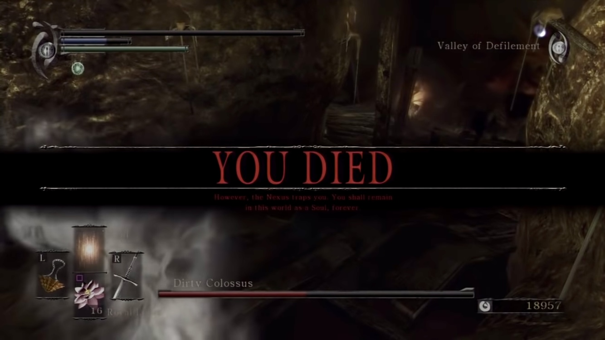
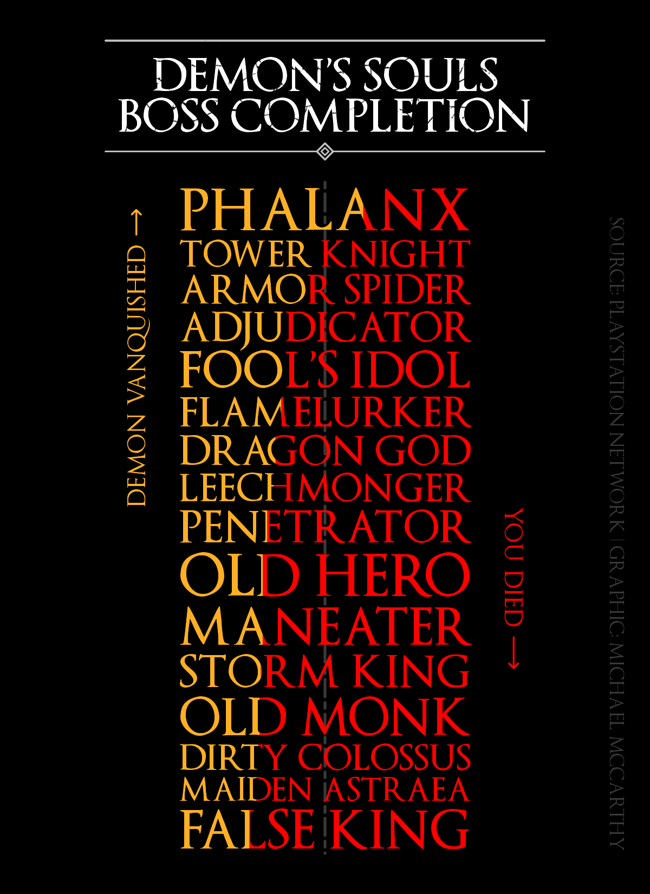

Overview
On the first day
Man was granted a soul
And with it, clarityOn the second day
upon Earth was planted
an irrevocable poison
A soul-devouring demon
Demon’s Souls is an action role-playing video game set in the dark fantasy kingdom of Boletaria, a land cursed with a deep, terrible fog brought forth by an ancient soul-devouring demon called the Old One. To lift the curse and mend the world players must slay and absorb the souls of five powerful archdemons, whereafter they can face the Old One and lull it back to slumber. Demon’s Souls is renowned for its challenge and design, and has made a lasting impact on the video game industry. It is also the progenitor of what has become one of my favourite video game franchises.
Theming Inspiration
Hero text appears on the screen whenever the player performs a significant action in Demon’s Souls, such as slaying a demon or, infamously, dying themselves. These provide a great design reference for plot theming.
Demon’s Souls also has a unique logo whose design I want to reference.
I want to translate these design elements to my plot like so:
- The Optimus Princeps font can be used for plot text.
- The yellow and red colours for the hero text can be used to contrast successes and failures, respectively.
- The distressed, broken style of the Demon’s Souls logo can be used for the plot’s title.
Applying these elements to my plot will help it fit the Demon’s Souls aesthetic.
Prerequisites
library(tidyverse)
library(ggfx)
library(magick)I’ll be using PlayStation Network trophy data for my plot. The data contains statistics for the percent of players who have slain a given boss in Demon’s Souls out of all the players who have ever played the game. I have constructed the data manually since Sony does not provide an API to access PlayStation Network trophy data programmatically. Demon’s Souls was released on February 5, 2009, so it is unlikely these stats will change much in the future.
# Tribbles are not just useful for scaring Klingons, they make it easy to
# create tibbles too
demons_souls <- tribble(
~boss, ~boss_type, ~location, ~archstone, ~percent_completed,
"Phalanx", "Demon", "Boletarian Palace", "1-1", 63.1,
"Tower Knight", "Demon", "Boletarian Palace", "1-2", 46.6,
"Penetrator", "Demon", "Boletarian Palace", "1-3", 30.3,
"False King", "Archdemon", "Boletarian Palace", "1-4", 24.2,
"Armor Spider", "Demon", "Stonefang Tunnel", "2-1", 43.9,
"Flamelurker", "Demon", "Stonefang Tunnel", "2-2", 35.1,
"Dragon God", "Archdemon", "Stonefang Tunnel", "2-3", 33.1,
"Fool’s Idol", "Demon", "Tower of Latria", "3-1", 35.7,
"Maneater", "Demon", "Tower of Latria", "3-2", 28.7,
"Old Monk", "Archdemon", "Tower of Latria", "3-3", 27.7,
"Adjudicator", "Demon", "Shrine of Storms", "4-1", 36.1,
"Old Hero", "Demon", "Shrine of Storms", "4-2", 28.8,
"Storm King", "Archdemon", "Shrine of Storms", "4-3", 28.1,
"Leechmonger", "Demon", "Valley of Defilement", "5-1", 32.5,
"Dirty Colossus", "Demon", "Valley of Defilement", "5-2", 27.2,
"Maiden Astraea", "Archdemon", "Valley of Defilement", "5-3", 26.6
) %>%
mutate(across(boss_type:archstone, as_factor))
demons_soulsWrangle
The data is already structured the way I want it for my plot, but there are still some interesting things to explore through wrangling and summary stats.
Within each location, players have to slay each demon in the order specified by the archstones. For example, in the Boletarian Palace a player cannot face the Tower Knight before they have slain the Phalanx. So each location has a first, second, and third boss (and the Boletarian Palace has a fourth that can only be faced after slaying all the other demons). This can be used to get an imperfect idea of player attrition in the game.
# Detect the order of bosses based on archstone suffix
demons_souls <- demons_souls %>%
mutate(
archstone_boss = case_when(
str_detect(archstone, "-1") ~ "First",
str_detect(archstone, "-2") ~ "Second",
str_detect(archstone, "-3") ~ "Third",
str_detect(archstone, "-4") ~ "Fourth (False King)"
),
archstone_boss = as_factor(archstone_boss),
.after = archstone
)
demons_soulsNow, there are two ways to go about getting this imperfect idea of player attrition in the game. The first involves using the entire data set.
# Calculate the average percent of players who have slain the first, second,
# ..., archstone boss across locations.
demons_souls %>%
group_by(archstone_boss) %>%
summarise(average_completed = mean(percent_completed))The second involves removing the Phalanx from the data set due to its influential pull on the average for the first archstone boss. It has a much higher completion percent (63.1%) than the other bosses in the game, and the reason for this is that the Phalanx is the first boss in the game. Players must slay it before they can go to face the first archstone boss from other locations in the game. Removing the Phalanx might give a more accurate picture of average completion for first archstone bosses.
# Trophy earned: Slayer of Demon "Phalanx"
demons_souls %>%
filter(boss != "Phalanx") %>%
group_by(archstone_boss) %>%
summarise(average_completed = mean(percent_completed))With the Phalanx’s influence removed, it looks like there is roughly a 4% drop in average completion for each successive archstone boss. In order to face the False King players must first slay every other demon and archdemon in the game, so it is interesting the drop stays consistent there. Most players who made it far enough to slay their first archdemon then went on to slay the rest.
Umbassa.
About one quarter of Demon’s Souls players persisted to the end of the game. But three quarters did not. Assuming most players at least attempted each location, then averaging by location can give an imperfect idea of their overall difficulty for players during their first playthrough.
# Calculate the average completion rate by location, arranged from "easiest" to
# "hardest"
demons_souls %>%
group_by(location) %>%
summarise(average_completed = mean(percent_completed)) %>%
arrange(desc(average_completed))It looks like there are two clusters here, an easier one with the Boletarian Palace and Stonefang Tunnel, and a harder one with Shrine of Storms, Tower of Latria, and the Valley of Defilement. I finished my first playthrough of the game in 2012, so I only have distant memories to reflect on, but this ranking looks sound to me. For experienced players I think this ranking is less relevant. Once you’re experienced most of the variability in difficulty comes down to the character build you choose.
Visualize
# Define aliases for plot fonts and colours
optimus <- "OptimusPrinceps"
optimus_b <- "OptimusPrincepsSemiBold"
yellow <- "#ffaf24" # #fec056The plot I want to make is inspired by this Tidy Tuesday plot by Georgios Karamanis. I used Georgios’ code as a starting point, then modified it to get the behaviour and result I wanted.
The centrepiece of the plot is the coloured text that shows the percent of Demon’s Souls players who have completed a given boss in yellow and who have not in red. This effect is achieved by applying a rectangular filter over the text that only allows the portion of the text within the filter’s borders to be shown. Doing this once for yellow text and once for red text allows the full string to appear, with the ratio of colours within a boss’s name reflecting the percent of players that have completed it. A few calculations are needed in order for the ratios to be accurate, and for the text to look aesthetically pleasing.
demons_souls_plot <- demons_souls %>%
mutate(
# Percentages need to be in decimal form for the calculations and plotting
# to work properly
percent_completed = percent_completed/100,
boss = fct_reorder(toupper(boss), percent_completed),
# In order to justify text to the same width, a ratio of how many times
# each string would fit into the widest string needs to be calculated. This
# can then be multiplied by an arbitrary value to determine the final size
# for each string of text.
str_width = strwidth(boss, family = optimus_b, units = "inches") * 25.4, # in millimetres
str_ratio = max(str_width)/str_width,
text_size = 4.9 * str_ratio,
# The division here is arbitrary, its effect is reflected in the scale of the
# y-axis
tile_height = text_size / 10
) %>%
# Bosses will appear from top to bottom based on completion ratios. The
# calculation here accounts for the differences in text size for each string.
arrange(percent_completed) %>%
mutate(y = cumsum(lag(tile_height/2, default = 0) + tile_height/2))Now the plot can be constructed. The final code for the plot is roughly 100 lines long, so I’ve hidden it in the section below. However, there are a few parts of the code I want to highlight before showing the final plot.
Show Code
# The trick for geom spacing is to set the size of the plot from the start
file <- tempfile(fileext = '.png')
ragg::agg_png(file, width = 4, height = 5.5, res = 300, units = "in")
ggplot(demons_souls_plot) +
# Make it easier to see where 50% is using a vertical line. geom_segment() is
# used here instead of geom_vline() because the latter goes up into the title
# text. An empty data frame is supplied so that only one copy of the geom is
# drawn.
geom_segment(aes(
x = 0,
xend = 0,
y = 10.9,
yend = 0,
size = 0.6),
data = data.frame(),
alpha = 0.3,
colour = "grey",
lineend = "round",
linetype = "twodash"
) +
scale_alpha_identity() +
# Set bounding box for yellow portion of centrepiece text
as_reference(
geom_rect(aes(
xmin = -0.5,
xmax = -0.5 + ((percent_completed)),
ymin = y - (tile_height * 0.5),
ymax = y + (tile_height * 0.5)
)),
id = "demon_vanquished"
) +
# Only show the portion of yellow centrepiece text located within the
# bounding box
with_blend(
geom_text(aes(
x = 0,
y = y,
label = boss,
size = text_size
),
colour = yellow,
family = optimus_b),
bg_layer = "demon_vanquished",
blend_type = "in"
) +
# Set bounding box for red portion of centrepiece text
as_reference(
geom_rect(aes(
xmin = 0.5 - ((1 - percent_completed)),
xmax = 0.5,
ymin = y - (tile_height * 0.5),
ymax = y + (tile_height * 0.5)
)),
id = "you_died"
) +
# Only show the portion of red centrepiece text located within the bounding
# box
with_blend(
geom_text(aes(
x = 0,
y = y,
label = boss,
size = text_size
),
colour = "red",
family = optimus_b),
bg_layer = "you_died",
blend_type = "in"
) +
# Draw "axis" for Demon Vanquished
annotate(
"text",
x = -0.65,
y = 7.75,
label = "demon vanquished",
angle = 90,
size = 5,
family = optimus,
colour = yellow
) +
geom_segment(aes(
x = -0.645,
xend = -0.645,
y = 10.05,
yend = 10.45),
lineend = "round",
colour = yellow,
size = 0.3,
arrow = arrow(angle = 45, length = unit(1, "mm"), type = "open")
) +
# Draw "axis" for You Died
annotate(
"text",
x = 0.65,
y = 4.65,
label = "you died",
angle = 270,
size = 5,
family = optimus,
colour = "red"
) +
geom_segment(aes(
x = 0.645,
xend = 0.645,
y = 3.51,
yend = 3.01),
lineend = "round",
colour = "red",
size = 0.3,
arrow = arrow(angle = 45, length = unit(1, "mm"), type = "open")
) +
# Draw a title surrounded by line decorations at the top of the panel
geom_segment(aes(
x = -0.75,
xend = 0.75,
y = 13.2,
yend = 13.2,
size = 0.3),
lineend = "round",
colour = "grey"
) +
annotate(
"text",
x = 0,
y = 12.325,
size = 7,
family = optimus_b,
colour = "white",
lineheight = 0.75,
label = "DEMON’S SOULS\nBOSS COMPLETION"
) +
geom_segment(aes(
x = -0.025,
xend = -0.75,
y = 11.4,
yend = 11.4,
size = 0.3),
lineend = "round",
colour = "grey"
) +
geom_segment(aes(
x = 0.025,
xend = 0.75,
y = 11.4,
yend = 11.4,
size = 0.3),
lineend = "round",
colour = "grey"
) +
annotate(
"point",
x = 0,
y = 11.4,
colour = "grey",
shape = 5,
size = 2,
stroke = 0.6
) +
annotate(
"point",
x = 0,
y = 11.4,
colour = "grey",
shape = 5,
size = 0.75
) +
# Draw plot caption
annotate(
"text",
x = 1,
y = 10.33,
angle = 270,
hjust = 0,
size = 3,
alpha = 0.3,
label = "SOURCE: PLAYSTATION NETWORK | GRAPHIC: MICHAEL MCCARTHY",
family = optimus,
color = "grey"
) +
# Make sure the text size calculated for each string is used so that strings
# are justified
scale_size_identity() +
# Take axis limits exactly from data so there's no spacing around the panel,
# allow drawing outside of the panel for annotations, and set the axis limits
# to match the limits of the text.
coord_cartesian(expand = FALSE, clip = "off", xlim = c(-0.5, 0.5)) +
# Specify the panel size manually. This makes it easier to position plot
# elements with absolute positions.
ggh4x::force_panelsizes(rows = unit(5, "in"), # height
cols = unit(1.8, "in")) + # width
theme_void() +
theme(
legend.position = "none",
plot.margin = unit(c(0.5, 4, 0.5, 4), "in"),
plot.background = element_rect(fill = "black", color = NA))
invisible(dev.off())
# Apply a mask texture to the final image to mimic the style of the Demon's
# Souls logo in the plot title
mask <- image_read(
here("posts", "2021-06-15_demons-souls", "images", "texture.png")
) %>%
image_transparent("white") %>%
image_threshold("black", "90%")
final_plot <- image_composite(image_read(file), mask, operator = "Over")First, the code behind the coloured centrepiece text. It uses ggfx::as_reference() and ggfx::with_blend() to selectively apply a filter over portions of the text, as I discussed earlier. The boundaries of the filter are defined by the ggplot2 geom inside of ggfx::as_reference(), then ggfx::with_blend() applies a filter specified by blend_type to the ggplot2 geom inside of it. By duplicating this process twice—once for yellow text and again for red text—but with different filter boundaries based on the percent completed and not completed, the entire boss name is displayed with accurate colour fills.
# Set bounding box for yellow portion of centrepiece text
as_reference(
geom_rect(aes(
xmin = -0.5,
xmax = -0.5 + ((percent_completed)),
ymin = y - (tile_height * 0.5),
ymax = y + (tile_height * 0.5)
)),
id = "demon_vanquished"
) +
# Only show the portion of yellow centrepiece text located within the
# bounding box
with_blend(
geom_text(aes(
x = 0,
y = y,
label = boss,
size = text_size
),
colour = yellow,
family = optimus_b),
bg_layer = "demon_vanquished",
blend_type = "in"
) +
# Set bounding box for red portion of centrepiece text
as_reference(
geom_rect(aes(
xmin = 0.5 - ((1 - percent_completed)),
xmax = 0.5,
ymin = y - (tile_height * 0.5),
ymax = y + (tile_height * 0.5)
)),
id = "you_died"
) +
# Only show the portion of red centrepiece text located within the bounding
# box
with_blend(
geom_text(aes(
x = 0,
y = y,
label = boss,
size = text_size
),
colour = "red",
family = optimus_b),
bg_layer = "you_died",
blend_type = "in"
)Second, the code behind the distressed, broken style of the title text. This one is actually quite simple. It uses magick::image_composite() to apply a texture mask I made in Krita over the composed plot. The mask has a transparent background with black lines located over the space where the plot title is. Both the composed plot and mask images have the same dimensions, so when they’re composed together the effect is applied exactly where I want it.
image_composite(plot, mask, operator = "Over")Finally, I just wanted to note that the decorative lines around the plot’s title text are actually made up of ggplot2 geoms. I used two ggplot2::geom_point() geoms with different sizes to create the diamond on the bottom line.
Final Graphic


Michael McCarthy
Thanks for reading! I’m Michael, the voice behind Tidy Tales. I am an award winning data scientist and R programmer with the skills and experience to help you solve the problems you care about. You can learn more about me, my consulting services, and my other projects on my personal website.
Session Info
─ Session info ───────────────────────────────────────────────────────────────
setting value
version R version 4.2.2 (2022-10-31)
os macOS Mojave 10.14.6
system x86_64, darwin17.0
ui X11
language (EN)
collate en_CA.UTF-8
ctype en_CA.UTF-8
tz America/Vancouver
date 2022-12-21
pandoc 2.14.0.3 @ /Applications/RStudio.app/Contents/MacOS/pandoc/ (via rmarkdown)
quarto 1.2.280 @ /usr/local/bin/quarto
─ Packages ───────────────────────────────────────────────────────────────────
package * version date (UTC) lib source
dplyr * 1.0.10 2022-09-01 [1] CRAN (R 4.2.0)
forcats * 0.5.2 2022-08-19 [1] CRAN (R 4.2.0)
ggfx * 1.0.1 2022-08-22 [1] CRAN (R 4.2.0)
ggplot2 * 3.4.0 2022-11-04 [1] CRAN (R 4.2.0)
here * 1.0.1 2020-12-13 [1] CRAN (R 4.2.0)
magick * 2.7.3 2021-08-18 [1] CRAN (R 4.2.0)
purrr * 0.3.5 2022-10-06 [1] CRAN (R 4.2.0)
readr * 2.1.3 2022-10-01 [1] CRAN (R 4.2.0)
sessioninfo * 1.2.2 2021-12-06 [1] CRAN (R 4.2.0)
stringr * 1.5.0 2022-12-02 [1] CRAN (R 4.2.0)
tibble * 3.1.8 2022-07-22 [1] CRAN (R 4.2.0)
tidyr * 1.2.1 2022-09-08 [1] CRAN (R 4.2.0)
tidyverse * 1.3.2 2022-07-18 [1] CRAN (R 4.2.0)
[1] /Users/Michael/Library/R/x86_64/4.2/library/__tidytales
[2] /Library/Frameworks/R.framework/Versions/4.2/Resources/library
──────────────────────────────────────────────────────────────────────────────Data
Download the data used in this post.
Fair Dealing
Any of the trademarks, service marks, collective marks, design rights or similar rights that are mentioned, used, or cited in this article are the property of their respective owners. They are used here as fair dealing for the purpose of education in accordance with section 29 of the Copyright Act and do not infringe copyright.
Citation
BibTeX citation:
@online{mccarthy2021,
author = {Michael McCarthy},
title = {Go Forth, Slayer of {Demons}},
date = {2021-06-15},
url = {https://tidytales.ca/posts/2021-06-15_demons-souls},
langid = {en}
}
For attribution, please cite this work as:
Michael McCarthy. (2021, June 15). Go forth, slayer of Demons.
https://tidytales.ca/posts/2021-06-15_demons-souls
Comments